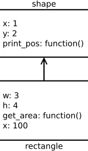
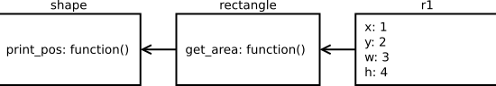
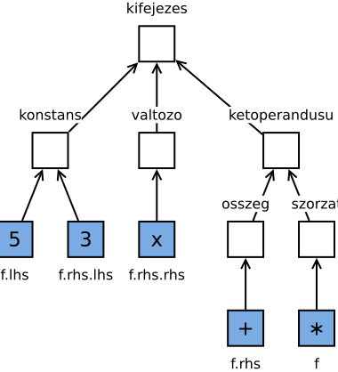

III/b. rész: A Visitor minta más nyelvekben
Czirkos Zoltán · 2019.03.19.
Ez az írás megmutatja, hogy a Visitor tervezési mintát hogyan kell implementálni egy egész más felépítésű programozási nyelvben, a JavaScript-ben. Spoiler alert: sehogy, nincsen rá szükség.
A kifejezésfás programot az előző írásokban a Visitor OOP tervezési minta segítségével refaktoráltuk, szétválaszthatóvá vált az adatszerkezet és az azon dolgozó algoritmusok. A sorozat befejező része kicsit (nagyon) eltávolodik a C++-tól, megmutatja, hogy egy teljesen más felépítésű, működésű programozási nyelvben hogyan oldható meg ugyanez a feladat. A választott nyelv a JavaScript.
Emlékeztetőként: a Visitor tervezési mintával szétválasztható egymástól a kódban egy adatszerkezet osztályhierarchiája az abban tárolt objektumokon végzett tevékenységektől. Az egyes tevékenységeket a minta szerint egy külön osztályhierarchia reprezentálja, így új tevékenység hozzáadásakor az adatszerkezet osztályait nem kell módosítani.
A minta a tevékenységeket elvégző objektumokat nevezik látogatónak, azaz Visitor-nak. Az adatszerkezet
hierarchiájába ehhez egyetlen virtuális függvényt kell tenni: azt, amelyik fogadja a tevékenységet elvégző objektum
függvényhívását. Ez az accept_visitor() függvény, amelynek egyetlen dolga, hogy a Visitor a típusra
jellemző tevékenységét elvégző függvényét meghívja.
hierarchiája
class Element {
public:
virtual void accept_visitor(Visitor & v) = 0;
};
class ConcreteElement1 : public Element {
public:
virtual void accept_visitor(Visitor & v) override { // *
v.visit_concrete_element_1(*this); // 1
}
};
class ConcreteElement2 : public Element {
public:
virtual void accept_visitor(Visitor & v) override { // *
v.visit_concrete_element_2(*this); // 2
}
};Erre függvényhívásra azt is szokták mondani, hogy az elem a látogatót visszahívja. Ez azért van így, mert az elem
feldolgozását általában a látogató felől kezdeményezzük: ConcreteVisitor::process(). A programunk feladatától függően
ennek a függvénynek nem feltétlenül kell virtuálisnak lennie.
hierarchiája
class Visitor {
public:
virtual void visit_concrete_element_1(ConcreteElement1 & e) = 0;
virtual void visit_concrete_element_2(ConcreteElement2 & e) = 0;
};
class ConcreteVisitor : public Visitor {
public:
void process(Element & e) {
e.accept_visitor(*this); // *
}
virtual void visit_concrete_element_1(ConcreteElement1 & e) override { // 1
/* ... */
}
virtual void visit_concrete_element_2(ConcreteElement2 & e) override { // 2
/* ... */
}
};A kérdés persze felmerül, hogy szükségünk van-e minderre a mágiára, mert azért azt érezni lehet, hogy valami nincs rendjén. Sejtjük, hogy valami fundamentális probléma van, és az egymást oda-vissza hívó függvényekkel csak megkerüljük, nem megoldjuk a problémát.
Az eredeti problémánk az volt, hogy egy kész, meglévő osztályhierarchiához szerettünk volna hozzáadni utólag új műveleteket, leginkább az osztályok módosítása nélkül. Az objektumorientált programozásban általában objektumokról beszélünk, közben a programunkban igazából osztályokat írunk. A fundamentális probléma az, hogy szétválasztottuk az objektumokat és az objektumok viselkedését egymástól. Tehát az, hogy megkülönböztetjük az objektumokat és az osztályokat.
A klasszikus, osztály alapú OOP-ben az osztály és az objektum két különböző fogalom. Az osztályok ebben egyfajta tervrajzként jelennek meg. Például ha szükségünk van a programunkban székekre, akkor készítünk egy tervrajzot, az osztályt, amelyben leírjuk, hogyan néz ki egy szék. Utána pedig a szék objektumokat ez alapján példányosítjuk. Ebben a modellben egy karfás szék létrehozásához előbb készítenünk kell egy új tervrajzot a szék tervrajza alapján (ez a leszármazott osztály), hogy utána ténylegesen létre tudjuk hozni a karfás szék objektumokat.
A prototípus alapú OOP-ben nincsenek külön osztályok és objektumok. Ebben ha szükségünk van egy székre, akkor fogunk egy üres objektumot, és hozzáadunk négy lábat meg egy háttámlát. Ha szükségünk van további székekre, akkor az előző mintájára készítjük el azokat. Ha pedig szükségünk van egy karfás székre, egyszerűen gyártunk egy széket, és rászereljük a két karfát is.
Sejthető, hogy egy C++-ban nem menne egykönnyen – nem tehetjük meg, hogy üres objektumhoz adattagokat adunk hozzá. A prototípus alapú OOP a dinamikus természetű nyelvekre jellemző, az olyanokra, mint amilyen például a JavaScript is. Ezekben a nyelvekben a változók típusa, az objektumok adattagjainak száma stb. mind futási időben változhatnak. A következő példában a prototípusok használatát ezért JavaScript kódrészleteken keresztül mutatjuk be.
Induljunk ki az alakzatos példából! Hozzunk létre egy alakzatot (shape), és tároljuk annak pozícióját, továbbá legyen az alakzatnak egy
olyan függvénye is, amelyik kiírja a konzolra a pozíciót! Ennek leírásához létrehozunk egy üres objektumot az
Object.create() függvénnyel, amelybe betesszük a koordinátákat és a függvényt:
var shape = Object.create(null);
shape.x = 1;
shape.y = 2;
shape.print_pos = function() {
console.log("Shape position: (" + this.x + "," + this.y + ")");
};A létrehozott objektum máris működőképes, a tagfüggvénye meghívható:
shape.print_pos(); /* Shape position: (1,2) */Ezt az alakzat objektumot önmagában nem fogjuk használni, csak arra, hogy más objektumok számára minta, prototípus legyen. Például egy téglalap (rectangle) létrehozása így nézhet ki:
var rectangle = Object.create(shape); /* ! */
rectangle.w = 3;
rectangle.h = 4;
rectangle.get_area = function() {
return this.w * this.h;
};Ennek a téglalapnak meghívhatjuk a területet kiszámító függvényét:
console.log(rectangle.get_area()); /* 12 */A lényeg azonban nem ez, hanem az Object.create(shape) függvényhívás. Ezzel azt mondjuk, hogy szeretnénk
létrehozni egy objektumot, amelynek a prototípusa a shape objektum. Emiatt a téglalapunknak is van
x attribútuma és print_pos() függvénye:
console.log(rectangle.x); /* 1 */
rectangle.print_pos(); /* Shape position: (1,2) */Adattagok olvasása
Az eddigi kódunkban tehát a rectangle objektum prototípusa a shape objektum, a shape
objektum pedig nem rendelkezik ilyennel. A prototípusnak az attribútumok elérésekor van szerepe. Ugyanis egy objektum valamely
adattagjának olvasásakor nem csak az adott objektumot, hanem annak prototípusát is figyelembe veszi a JavaScript motor. Például
a rectangle.w kifejezés értéke 3, mert a w nevű attribútum megtalálható az objektumban.
Ugyanakkor x nevű attribútum nincs benne. Ennek ellenére a rectangle.x kifejezésnek is van értéke,
ami 1. Ennek kikereséséhez előbb szintén a rectangle objektumot kell megvizsgálni, de mivel nincs
benne az x, a keresést a prototípusában kell folytatni, ahol meg is lesz. A rectangle.qqq kifejezést
nem lehet kiértékelni, mivel qqq sem a téglalapban, sem az alakzatban nincs, az alakzatnak pedig már
nincs prototípusa. Így ennek értéke undefined.
Hasonlóképp működik a függvények esetén is. A rectangle.get_area() meghívható, a rectangle.print_pos()
is (amelyet a shape-ben lehet megtalálni). A shape.get_area() viszont nem kiértékelhető, mert abban az
objektumban nincsen ilyen függvény.
Adattagok írása
Az adattagok írása egy kicsit másképp működik. Ha egy adattagot létrehozunk vagy módosítunk, akkor az a módosítás mindig a
konkrét objektumot érinti, soha nem az ősét. Tehát egy rectangle.x = 100; sor hatására a rectangle
objektum fog módosulni, nem pedig a shape:
rectangle.x = 100;Ez egy fontos momentum. Azért kell ennek így lennie, mert a rectangle.x módosításával nyilvánvalóan a téglalap
objektumot szerettük volna módosítani (áthelyezni), nem pedig annak prototípusát. Nem szeretnénk, hogy a művelet által a többi
objektum is megváltozzon, amelynek a shape a prototípusa. A rectangle.x adattag olvasása
viszont vissza fogja adni a beírt értéket, mert az adattag keresése a rectangle objektumtól indul, és már ott
van x, nem is jut elé a shape-ig, mint az előbb.
Ami érdekes, hogy ezek után a rectangle.print_pos() (100,2)-t ír ki. Az attribútumok keresése ugyanis mindig
attól az objektumtól indul, amelyre a this mutat. A rectangle.print_pos() kifejezésnél a this
a rectangle referenciája lesz, ezért a print_pos() függvényben this.x értéke 100 a
rectangle-ből, this.y értéke pedig 2 a shape-ből.
rectangle.print_pos(); /* Shape position: (100,2) */Az rectangle.x = 100; sorral tehát nem az összes alakzatot módosítjuk, hanem csak a konkrét téglalapot.
Ha az őst, azaz a prototípust szerettük volna módosítani, akkor shape.valami-nek adtunk volna értéket. Például
a shape.color = 'black'; sor hatására az ősbe fog kerülni az új adattag, amit persze látni fogunk minden
más objektumban is, amelynek a prototípusa a shape:
shape.color = 'black';
console.log(rectangle.color); /* black */Látszik, hogy a két objektum között referencia jellegű kapcsolat van. A shape módosításával a rectangle
is módosult. A prototípus módosítása kihat az összes objektumra, amelynek a szóban forgó objektum prototípusa. Sőt
egy objektum létrehozása után, utólag is módosíthatjuk annak prototípus objektumát, és ez hatással lesz az objektumra!
Mindezek miatt általában úgy szoktunk dolgozni, hogy külön kezeljük a prototípus objektumokat, és külön a programunk tényleges objektumait. A prototípus objektumokba tesszük a közös dolgokat (például a függvényeket), a programunk által manipulált adatok pedig a tényleges objektumok adattagjai lesznek. A prototípus objektumokat nagyrészt csak arra használjuk, hogy új objektumok létrehozásakor azok prototípusának jelöljük meg őket. Az előző példában az objektumhierarchiának igazából így kellett volna kinéznie:
A print_pos() közös minden alakzatra, a get_area() csak a téglalapokra nézve. Az x,
y, w, h adattag pedig egyedi az r1 objektumban. (Klasszikus értelemben véve
a shape és a rectangle osztályok, az r1 pedig objektum lenne.)
Így működik a prototípus alapú öröklés. Észre kell venni, hogy ez mennyi eddig megismert eszközt feleslegessé tesz. Nincsenek
külön statikus tagváltozók: amit az objektumokba teszünk, azok egyediek, amit pedig a prototípusba, az közös. Nincsenek statikus
függvények sem: egyszerűen csak olyan függvényeket írunk, amiben nem használjuk a this-t. A függvények automatikusan
virtuálisak, hiszen a függvény is csak adat, aminek a keresése az objektumtól indul; a prototípus láncolatban legkésőbb definiált
függvényt fogjuk megtalálni.
A prototipikus öröklés teljesen fölöslegessé teszi klasszikus OOP-ből ismert Visitor mintát, legalábbis eredeti célja szerint biztosan. Itt ha egy objektumhierarchiánál szükségünk van egy új műveletre, akkor egyszerűen betesszük az új műveletet a prototípus objektumokba, és már készen is vagyunk.
Először létrehozzuk a hierarchiát (kifejezések):
hierarchiája
var expression = Object.create(null);
var constant = Object.create(expression);
constant.create = function(c) {
var obj = Object.create(constant);
obj.c = c;
return obj;
};
var variable = Object.create(expression);
variable.create = function() {
return Object.create(variable);
};
var twooperand = Object.create(expression);
var sum = Object.create(twooperand);
sum.create = function(lhs, rhs) {
var obj = Object.create(sum);
obj.lhs = lhs;
obj.rhs = rhs;
return obj;
};
var product = Object.create(twooperand);
product.create = function(lhs, rhs) {
var obj = Object.create(product);
obj.lhs = lhs;
obj.rhs = rhs;
return obj;
}A gyártófüggvények az osztályokba kerültek, mint C++-ban a static create()-ek.
Ezek után tetszőleges műveleteket adhatunk hozzá a prototípusokhoz:
constant.eval = function(x) { return this.c; };
variable.eval = function(x) { return x; };
sum.eval = function(x) { return this.lhs.eval(x) + this.rhs.eval(x); };
product.eval = function(x) { return this.lhs.eval(x) * this.rhs.eval(x); };Ha kell, a szokásos technikával az ősökbe tehetünk közös segédfüggvényeket, mint itt
a twooperand-ba:
constant.print = function() { document.write(this.c); };
variable.print = function() { document.write('x'); };
twooperand.print_helper = function(op) {
document.write('(');
this.lhs.print();
document.write(op);
this.rhs.print();
document.write(')');
};
sum.print = function() { this.print_helper('+'); };
product.print = function() { this.print_helper('*'); };Végül pedig, már csak használnunk kell a megépült hierarchiát:
var f = product.create(constant.create(5),
sum.create(constant.create(3),
variable.create()));
document.write("f(x) = ");
f.print();
document.write("<br>");
document.write("f(10) = " + f.eval(10));
document.write("<br>");A létrehozott objektumok:
A fenti kód letölthető innen: proto_teljes.html.